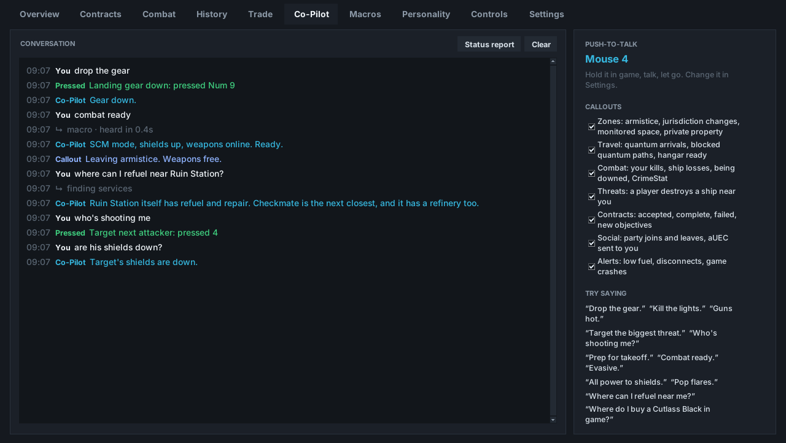

Talk to your ship, hands-free or with a button. It presses your own keybinds, remembers what your ship is doing, checks the HUD to make sure, calls out what's happening around you, and answers questions using your live game data and community prices.

Simple commands are matched right on your PC, so they fire instantly with no AI delay. It understands slang, synonyms and the usual speech-to-text slips, and you can chain several in one breath.
No profiles to import or keybinds to copy. Install it, pick a voice, and fly.
It reads your own Star Citizen bindings, so “gear down” presses whatever you've set. It can fill in actions the game leaves unbound, and backs up your file first.
It remembers whether your gear, power, lights and doors are on, so it never flips something you already did. After pre-flight it looks at your HUD and fixes it if the engines didn't come on.
Turn on voice activation and just say “Co-Pilot, gear down”. No button, no paid plan. Push-to-talk keeps working too.
It reads the log file the game writes as you play, and presses keys the way your keyboard does. It never touches the game's memory.
Gear, lights, shields, power, targeting, countermeasures, landing, doors, quantum and more, using your own keybinds.
One phrase runs a whole sequence: “prep for takeoff”, “combat ready”, “go dark”, “evasive”. Build your own.
Ask about your session, where to refuel or repair, where to buy a ship or component, refinery yields and trade routes.
Armistice, ungoverned space, quantum arrival, kills, losses, CrimeStat, contracts, party joins and aUEC transfers, spoken as they happen.
Ask “target status” and it reads your target's shields and hull off your HUD. It can call out when their shields drop.
Six built-in characters, every line editable, and a community gallery of line packs to install in one click.
A small click-through panel with your zone, current objective, quantum status and the last callout.
Live player-reported prices from UEX: best place to sell, best place to buy, and routes for your cargo size.
Contracts and objectives, combat log, and 30 days of session history: kills, deaths, jumps and spending.
It can look at the game to check itself. Ask “are my engines on?” or “what does that screen say?” and it takes a quick screenshot before answering.
“Set a 3 hour refinery timer.” It counts down on the overlay, keeps going if you restart, and tells you when it's done.
“Remember my main ship is a Cutlass Black.” Your notes stay in Settings where you can edit them, and it uses them in every answer.
Screenshots of the app with sample data.
Each one changes the callouts, the replies and how the AI talks. Your own edits always win.
Calm and to the point.
Leaving armistice. Weapons free.
Crisp, clipped, by the book.
Splash one. Gladius down.
Been flying cargo for years.
Out of armistice. Keep your head on a swivel.
Dry, sarcastic, technically helpful.
We've arrived. Try to contain your excitement.
Relentlessly polite.
Please fire responsibly.
Lives past the law.
Out of armistice. Open season.
Made by players, checked by a person, installed from the app under Personality → Browse community packs.
Share your packInstant commands, macros, callouts, the overlay and trade prices all work without it.
| Your own Anthropic key | Make a key at platform.claude.com and add a few dollars of credit. You pay Anthropic directly, roughly a tenth of a cent per question with the default model. |
|---|---|
| Co-Pilot plans soon | Free AI replies every month with no card, plus low-cost plans for more. No key or Anthropic account needed. |
| Off | Everything except answering questions still works. |
Run the installer. It installs just for you, no admin needed. Windows may say it protected your PC because the installer isn't code-signed yet: click More info → Run anyway.
Pick your push-to-talk button, your mic, a voice and whether to use the AI. It finds your Star Citizen folder by itself.
Hold push-to-talk and say “gear down”, or turn on voice activation and say “Co-Pilot, gear down”. It updates itself when new versions come out.
It doesn't read or change the game's memory and doesn't inject anything. It reads the log file the game writes to disk, and presses keys the way your keyboard does, only when you ask. It is not approved or endorsed by Cloud Imperium, so use your own judgement.
The app is free, including voice activation. The optional AI uses your own Anthropic API key, billed by Anthropic per question (roughly a tenth of a cent each with the default model). Co-Pilot plans are coming, with free AI replies every month and low-cost plans for more.
Only what a feature needs, when you use it: your question to the AI, price lookups to UEX, text to Microsoft for their online voices, and update checks to GitHub. Speech recognition runs on your PC. With push-to-talk, the mic is only used while you hold the button. With voice activation, it listens on your PC all the time, but only what you say after its name goes anywhere. Screen checks send a screenshot of the game to the AI and nothing is saved. Full privacy details.
No. It reads your binds and presses what you've set. It can give spare keys to actions Star Citizen leaves unbound, like separate gear up and gear down, but only when you click it, and it backs up your bindings file first.
Yes. Push-to-talk can be any key, mouse button, controller or joystick button.
Yes. It can listen and answer in English, German, French, Spanish, Italian, Portuguese or Dutch, with Microsoft voices for each. Instant commands and callouts are in English, but you can rewrite every line or install a community line pack.
Star Citizen doesn't write them to its log file. It can look at your screen instead: the target reader reads your target's shields and hull, and screen checks let the AI look at your HUD when you ask.